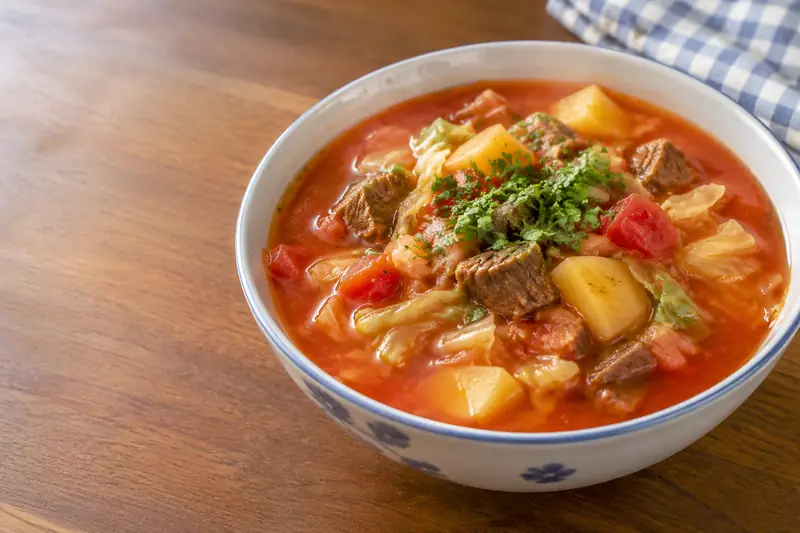
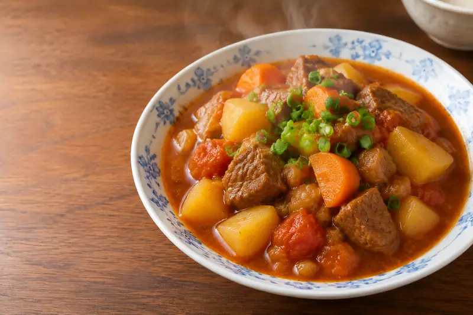
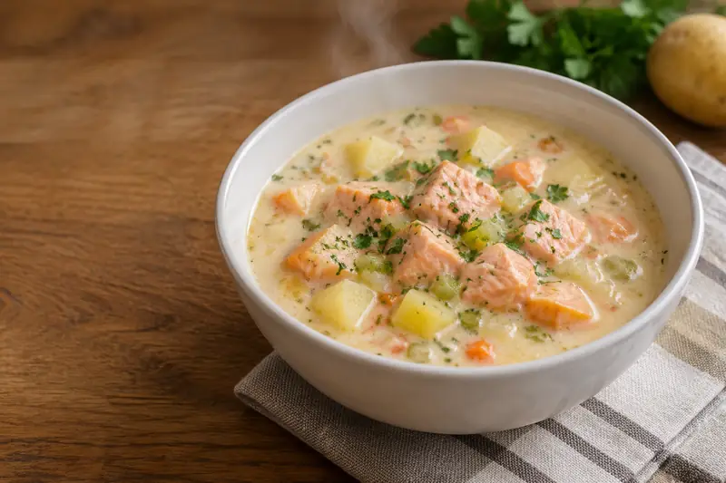

Vegetables蔬菜
Potatoes土豆
seen on costco.ca or in the Surrey warehouse listingCostco 目录/仓库可见
At Costco在 Costco
Typical pack常见规格: Yellow-fleshed potatoes 4.54 kg; russets 6.8 kg黄心土豆 4.54 公斤；褐皮土豆 6.8 公斤
Price varies; check the warehouse or costco.ca.价格随时变化，请看仓库或 costco.ca。
Sample date取样日期 2026-11-16. Availability varies by warehouse and season; this is not a stock guarantee.有无因门店和季节而异，不是库存保证。
Store and portion储存与分装
Keep in a cool dark place away from onions; cut away sprouts and green areas.常温避光放，别与洋葱同放；发芽、变绿的部分要切掉。
Divide a big bag into smaller ones so a sprouting potato does not spoil the lot.一大袋土豆分成小袋，避免整袋一起发芽。
Per 100 g (Canadian Nutrient File)每 100 克（加拿大营养素数据库）
Potato, flesh and skin, raw · code 2505
77 kcal · protein蛋白 2.02 g · fat脂肪 0.09 g · carbs碳水 17.47 g · fibre纤维 1.6 g · sodium钠 6 mg
No priority allergen.无重点过敏原。
Recipes with this用到它的菜
Irish Beef Stew爱尔兰炖牛肉210 min分钟 · 6 servings份 · Western西式 Di San Xian (Potato, Eggplant and Pepper)地三鲜35 min分钟 · 3 servings份 · Northeastern Chinese东北Northeastern Mixed Vegetable Stew东北乱炖95 min分钟 · 4 servings份 · Northeastern Chinese东北
Di San Xian (Potato, Eggplant and Pepper)地三鲜35 min分钟 · 3 servings份 · Northeastern Chinese东北Northeastern Mixed Vegetable Stew东北乱炖95 min分钟 · 4 servings份 · Northeastern Chinese东北 Korean Soy-braised Potatoes (Gamja Jorim)韩式酱烧土豆30 min分钟 · 3 servings份 · Korean韩
Korean Soy-braised Potatoes (Gamja Jorim)韩式酱烧土豆30 min分钟 · 3 servings份 · Korean韩 Greek Roast Leg of Lamb with Lemon Potatoes希腊烤羊腿185 min分钟 · 6 servings份 · Greek / Mediterranean希腊/地中海
Greek Roast Leg of Lamb with Lemon Potatoes希腊烤羊腿185 min分钟 · 6 servings份 · Greek / Mediterranean希腊/地中海 Japanese Chicken Curry日式咖喱鸡90 min分钟 · 4 servings份 · Japanese日Nikujaga土豆炖肉55 min分钟 · 3 servings份 · Japanese日
Japanese Chicken Curry日式咖喱鸡90 min分钟 · 4 servings份 · Japanese日Nikujaga土豆炖肉55 min分钟 · 3 servings份 · Japanese日 Braised Chicken with Potatoes土豆烧鸡45 min分钟 · 3 servings份 · Chinese home-style家常
Braised Chicken with Potatoes土豆烧鸡45 min分钟 · 3 servings份 · Chinese home-style家常 Roast Chicken with Root Vegetables烤全鸡（西式，配根茎蔬菜）170 min分钟 · 4 servings份 · Western西式
Roast Chicken with Root Vegetables烤全鸡（西式，配根茎蔬菜）170 min分钟 · 4 servings份 · Western西式 Sheet-Pan Salmon with Potatoes and Broccoli三文鱼烤盘餐50 min分钟 · 4 servings份 · Western西式Sheet-Pan Sausage and Vegetables香肠烤蔬菜60 min分钟 · 4 servings份 · Western西式Shepherd's Pie牧羊人派105 min分钟 · 6 servings份 · Western西式
Sheet-Pan Salmon with Potatoes and Broccoli三文鱼烤盘餐50 min分钟 · 4 servings份 · Western西式Sheet-Pan Sausage and Vegetables香肠烤蔬菜60 min分钟 · 4 servings份 · Western西式Shepherd's Pie牧羊人派105 min分钟 · 6 servings份 · Western西式 Hot and Sour Shredded Potatoes酸辣土豆丝19 min分钟 · 3 servings份 · Northeastern Chinese东北
Hot and Sour Shredded Potatoes酸辣土豆丝19 min分钟 · 3 servings份 · Northeastern Chinese东北

Harbin-style Borscht with Beef and Cabbage罗宋汤（哈尔滨红汤）120 min分钟 · 6 servings份 · Northeastern Chinese东北New England Clam Chowder新英格兰蛤蜊汤60 min分钟 · 4 servings份 · Western西式Xinjiang Big Plate Chicken大盘鸡90 min分钟 · 4 servings份 · Northwestern / Xinjiang西北/新疆Di San Xian (Potato, Eggplant and Pepper)地三鲜35 min分钟 · 3 servings份 · Northeastern Chinese东北Northeastern Mixed Vegetable Stew东北乱炖95 min分钟 · 4 servings份 · Northeastern Chinese东北Korean Soy-braised Potatoes (Gamja Jorim)韩式酱烧土豆30 min分钟 · 3 servings份 · Korean韩Greek Roast Leg of Lamb with Lemon Potatoes希腊烤羊腿185 min分钟 · 6 servings份 · Greek / Mediterranean希腊/地中海Japanese Chicken Curry日式咖喱鸡90 min分钟 · 4 servings份 · Japanese日Nikujaga土豆炖肉55 min分钟 · 3 servings份 · Japanese日
Beef and Potato Stew土豆炖牛肉120 min分钟 · 4 servings份 · Northeastern Chinese东北Braised Chicken with Potatoes土豆烧鸡45 min分钟 · 3 servings份 · Chinese home-style家常Roast Chicken with Root Vegetables烤全鸡（西式，配根茎蔬菜）170 min分钟 · 4 servings份 · Western西式
Salmon Chowder三文鱼土豆浓汤45 min分钟 · 6 servings份 · Western西式Sheet-Pan Salmon with Potatoes and Broccoli三文鱼烤盘餐50 min分钟 · 4 servings份 · Western西式Sheet-Pan Sausage and Vegetables香肠烤蔬菜60 min分钟 · 4 servings份 · Western西式Shepherd's Pie牧羊人派105 min分钟 · 6 servings份 · Western西式Hot and Sour Shredded Potatoes酸辣土豆丝19 min分钟 · 3 servings份 · Northeastern Chinese东北